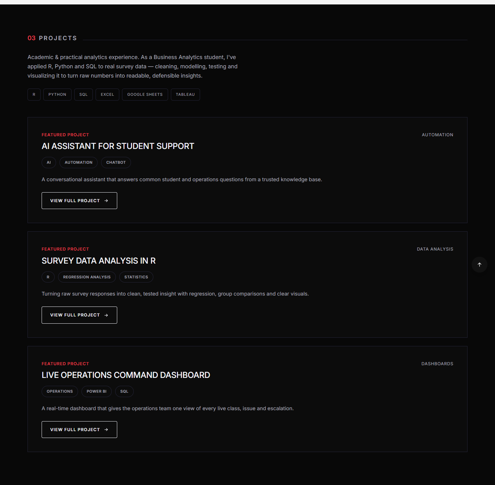
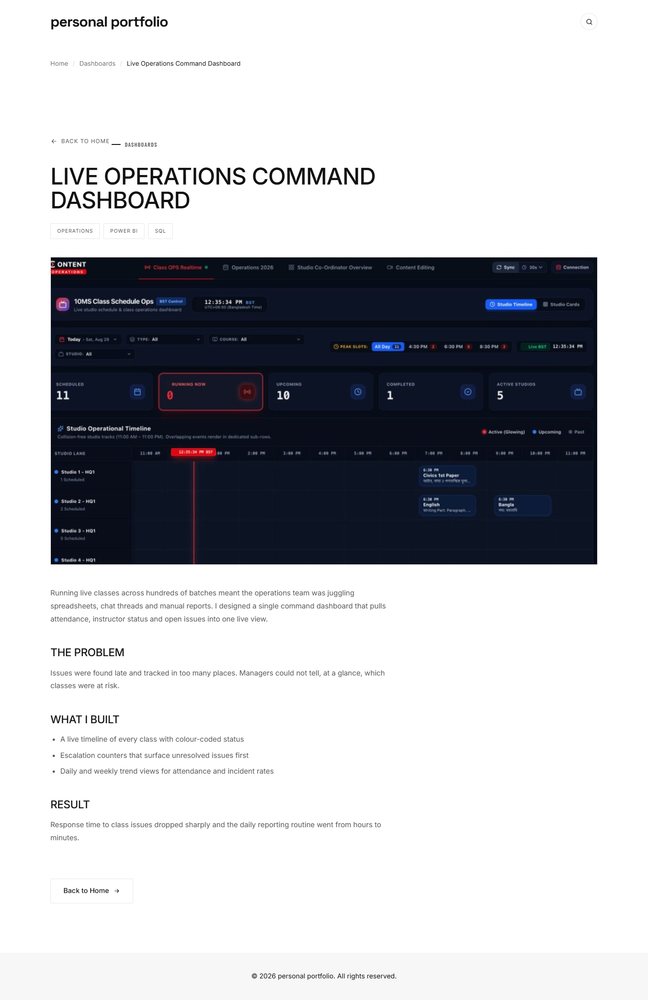
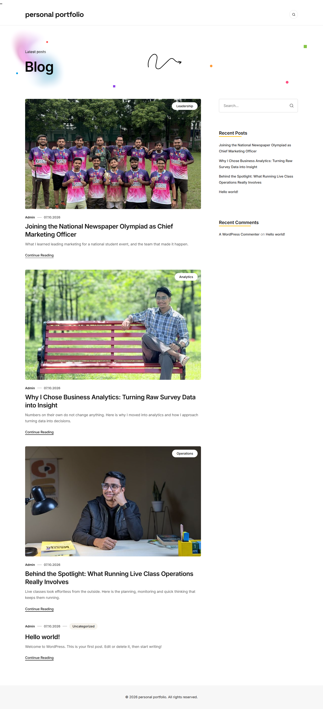

Documentation
Heliolisk
A single-page portfolio theme for analysts, operators and creators. The home page is built with Elementor using Heliolisk widgets; the theme provides the header, footer, blog, archives, search, single posts, pages and 404.
Requirements
| Item | Minimum |
|---|---|
| WordPress | 5.8 (tested up to 7.1) |
| PHP | 7.4 |
| Memory limit | 256 MB recommended while importing the demo |
Package contents
| Folder / file | What it is |
|---|---|
theme/heliolisk.zip | The theme. Upload this file in WordPress. It already contains the plugin installers described below. |
plugins/heliolisk-core.zip | The companion plugin: Projects, Header and Footer post types, Elementor widgets, sidebar widgets. Also bundled inside the theme; this copy is for manual installation. |
demo-data/demo-import.zip | Demo content (content.xml), Customizer settings (customizer.dat) and widgets (widget.wie). |
documentation/ | This documentation. Open index.html in a browser. |
licensing/licensing.txt | Licenses and credits of every third-party resource used. |
Install the theme
- In the WordPress admin go to Appearance → Themes → Add New → Upload Theme.
- Choose
theme/heliolisk.zipand click Install Now. - Click Activate.
Alternatively, copy the unzipped heliolisk folder to wp-content/themes/ and activate it from Appearance → Themes.
Install the plugins
After activation a notice asks you to install the required plugins. Open Appearance → Install Plugins, tick all, choose Install, then Activate. Heliolisk and Codestar Framework install from files inside the theme; the others come from wordpress.org, so the site needs an internet connection.
| Plugin | Status | Used for |
|---|---|---|
| Heliolisk (companion) | Required | Projects, Header & Footer post types, Elementor widgets, sidebar widgets. Installed from the bundled zip. |
| Elementor | Required | Page builder for the home page, header and footer. |
| Codestar Framework | Required | The Theme Options panel. Installed from the bundled zip. |
| Classic Editor | Recommended | The classic post editor. |
| Classic Widgets | Recommended | The classic Appearance → Widgets screen for the sidebars. |
| CMB2 | Recommended | The per-page Header and Footer choice. |
Import the demo
Import on a fresh site, with the theme and all plugins active. The demo adds pages, posts, projects, header and footer templates and a menu, and it replaces the Customizer and widget settings.
Unzip demo-data/demo-import.zip. You get three files. Do them in this order:
1. Content - content.xml
- Go to Tools → Import and install WordPress Importer if asked, then run it.
- Upload
content.xml. - Assign the content to your user and tick Download and import file attachments. The demo images come from the Heliolisk plugin, so no download from the internet happens.
When the import finishes, Heliolisk sets up the rest: the Home page becomes your front page, its header and footer are linked, and the demo menu is assigned to Primary Menu.
2. Customizer - customizer.dat
- Go to Appearance → Customize → Export/Import.
- Under Import choose
customizer.datand click Import. This switches the site to the Dark color scheme.
3. Widgets - widget.wie
- Go to Tools → Widget Importer & Exporter.
- Choose
widget.wieand click Import Widgets.
Theme Options saved in Appearance → Theme Options take precedence over the Customizer. If the colors or layout look different after import, check there first.
Set up the home page
- If you imported the demo this is already done. Otherwise go to Settings → Reading and choose A static page.
- Set Homepage to the page named Home (created by the demo), then save.
- Open the page with Edit with Elementor. The Heliolisk widgets are in the Heliolisk category of the Elementor panel.
Pages built with Elementor are shown full width, with no banner or sidebars around them.
For the dark look the widgets are designed for, set Color Scheme to Dark in Theme Options.
Theme Options
Open Appearance → Theme Options. Use Save to store changes, Reset Section or Reset All to go back to defaults.
| Section | Options |
|---|---|
| General | Color Scheme: Light (clean white blog look) or Dark (the portfolio look). |
| Header | Header Template, Logo Image, Logo Text, Logo Link, Show Search Button, Search Placeholder, Nav Menu Text Color, Social Links (LinkedIn, GitHub, Twitter, Facebook, Instagram, YouTube), Email Address, Social Icon colors. |
| Footer | Footer Template, Copyright Text, Location Text, Footer Text / Background / Top Border colors, Show Back to Top button. |
| Blog & Layout | Blog, single post and page sidebar layouts, Show Page Banner, Blog Title, Excerpt Length, and single post toggles (share buttons, author box, post navigation, related posts). |
Leave a color empty to use the color scheme's own color.
Customizer
The same options are also available in Appearance → Customize → Heliolisk Options, with live preview. When a value is set on the Theme Options screen it takes precedence; the Customizer keeps driving anything left untouched there.
Per page settings
Each page can differ from the site-wide options. Every field starts at Use Customizer Setting, so a page only changes when you choose something.
| Box | Field | Effect |
|---|---|---|
| Page Settings | Sidebar Layout | Right, left, both or no sidebar for this page. |
| Page Settings | Page Banner | Show or hide the title and breadcrumb strip. |
| Page Header & Footer (sidebar) | Header | Header template for this page (powered by CMB2). |
| Page Header & Footer (sidebar) | Footer | Footer template for this page (powered by CMB2). |
| Post Settings | Sidebar Layout | Sidebar layout for a single post. |
You can also use the page templates Right Sidebar, Left Sidebar, Left & Right Sidebars and Full Width.
Elementor widgets
Search for the widget by name, or open the Heliolisk category in the Elementor panel. Each widget has Content and Style tabs.

Projects
Projects are a custom post type, managed under Heliolisk → Projects.
- Click Add New Project.
- Enter the title and the details in the editor, and write a short Excerpt.
- Set the Project Image (featured image).
- Pick a Project Category and add tags for the skills and tools used.
- Publish.
Projects appear in the Projects widget and have their own page and an archive at /projects/.

If a project page shows a 404 after install, open Settings → Permalinks and click Save Changes to refresh the links.
Blog & sidebars
Create posts under Posts → Add New. Set a featured image, a category and tags. The excerpt is used on blog cards.
Choose the layout for the blog, single posts and pages in Theme Options → Blog & Layout: Right Sidebar, Left Sidebar, Left & Right Sidebars or No Sidebar (Full Width). A side with no widgets hides itself.

Single posts can show share buttons, an author box, previous / next links and related posts; turn each on or off in Theme Options.
Translation
The theme is translation ready (text domain heliolisk). The template is languages/heliolisk.pot. Open it with Poedit or Loco Translate, save your .po and .mo files in the same folder or in wp-content/languages/themes/.
Troubleshooting
Plugins are listed as inactive
Open Appearance → Install Plugins and use Begin activating plugins.
Theme Options is missing
Activate Codestar Framework. The panel is built on it.
Elementor widgets are missing
Make sure both Elementor and Heliolisk (companion plugin) are active, then reload the editor.
Sidebar text is hard to read
Update to version 1.2.0 or later, which fixes sidebar widget colors in the Dark scheme.
Project pages show 404
Save Settings → Permalinks once.
Demo images are missing after the import
Make sure the Heliolisk plugin was active before you ran the import, and that you ticked Download and import file attachments.
Notices about PaxHeaders or JSON syntax errors
Your unzip tool added PaxHeaders folders. Delete them, or extract with a tool that does not create them (for example 7-Zip).
Credits
Heliolisk is released under the GNU General Public License v2 or later. These third-party resources are bundled; full license details are in licensing/licensing.txt.
| Resource | License |
|---|---|
| Elementor | GPL v3 (installed from wordpress.org) |
| Codestar Framework 2.3.1 | GPL v2 |
| CMB2 | GPL v2 (installed from wordpress.org) |
| TGM Plugin Activation 2.6.1 | GPL v2 or later |
| Bootstrap 5.3.3 | MIT |
| GSAP and ScrollTrigger 3.13.0 | GSAP Standard License (free, including commercial use) |
| jQuery Nice Select 1.0 | MIT |
| Feather icons (some inline SVG icons) | MIT |
| Space Grotesk, Inter, Barlow Condensed (Google Fonts) | SIL Open Font License 1.1 |
1.1.0
- Initial release.